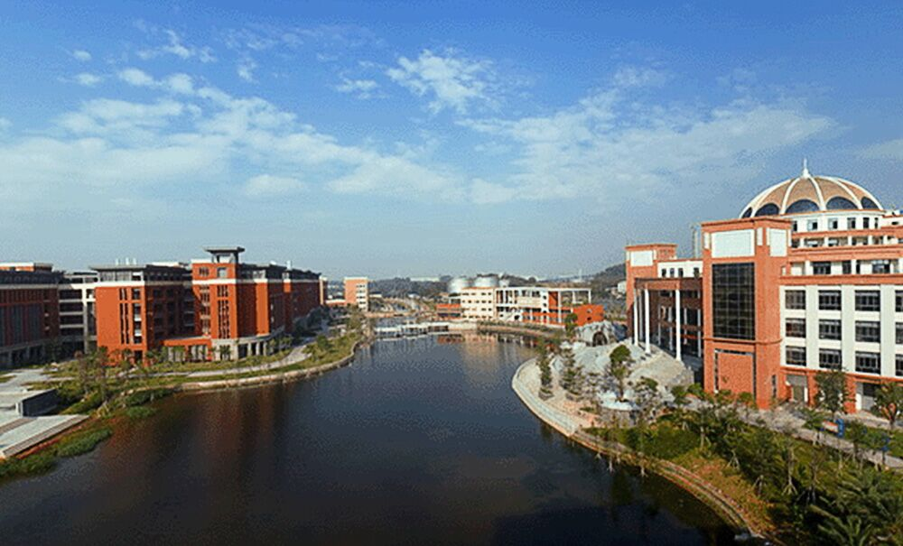

首页
报道须知
新生动态
印象广医
新生百事通
军训号角
精彩羊城
广医导览
关于我们

新生动态
军训二三事
一.初遇军训...
学校举行2016级新生军训检阅暨总结大会
军训二三事
一.初遇军训...
多姿多彩的大学生活悄然而至，熟悉广医生活从这里开始，为你打造完美的新生攻略。
广医大奖学金每学年评定一次，评定方法、评奖条件……更多细节皆在这里。
2016 - 2017 学年度上课与放假安排尽在其中。
新生在录取的专业上修完一年的学业后，可以提出转专业的申请，学生的各个方面达到要求便可转专业。
南山班为广医的特色之一，开设对象为临床学生，在修完第一学年的课程后，各项条件优秀的学生会进行一轮专家面试， 面试成功便可进入南山班学习。
广州医科大学有九大校级组织，党委宣传部下有直属三站，学生可以自愿加入，通过选拔后可以在其中任职。
Copyright © 2002-2018 GZMU.net.cn
制作团队
广州医科大学党委宣传部主办 粤ICP备05008871号
总点击量:8270738